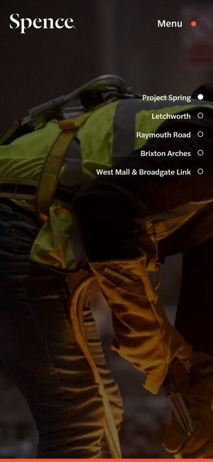

Awwwards 우수작 · 2025.10먼저 보세요01Spence
와 포인트어두운 현장 영상 위에 ‘탁월함 위에 짓는다’ 한 문장과 세리프 글꼴의 회사 이름, 메뉴 여섯 개만 둡니다. 오른쪽에는 진행한 현장 이름이 세로로 늘어서고, 하나씩 넘어가며 영상이 바뀝니다. 내리면 ‘20년’ 배지와 회사 소개 한 줄이 이어집니다.
BUILDGO라면더원파트너스 첫 화면 그대로 — 실제 개발 현장 영상 위에 회사를 소개하는 한 문장, 오른쪽에는 대표 사업 이름 목록. 사업 이름을 누르면 그 현장 영상으로 바뀝니다.